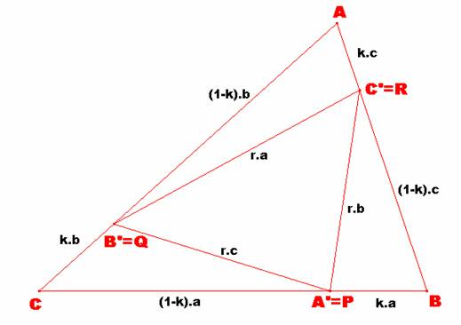

Problema 273
P, Q, R denotan puntos sobre los
lados BC, CA y AB, respectivamente, de un triángulo dado ABC.
Determinar todos los ABC tales que si BP/BC = CQ/CA = AR/AB = k
(distintos de 0, 1/2) entonces PQR (en este orden) es semejante a
ABC.
Este problema aparece en Crux
Mathematicorum (llamada en esas fechas Eureka) en Vol.3, 1977, January, No.1.
Klamkin.S. (1977):
Solución
de F. Damián Aranda Ballesteros, profesor del IES Blas Infante de Córdoba,
España.
Sea el triángulo ABC de la figura con las características del enunciado.
|
 |
Si r es la razón de semejanza
entre ambos triángulos ABC y A’B’C’, entonces la razón entre sus áreas será
igual a r2. Sea S el área del triángulo ABC, [ABC]=S.
Por un lado, será [A'B'C']=S×r2.
Por otra parte y como se quiera
que [AB'C'] = [A'BC'] = [A'B'C] = k×(1-k)×S, tenemos que: [A'B'C']=S-3× k×(1-k)×S =S× (3k2-3k+1)
En definitiva, 3k2-3k+1= r2.
Buscamos ahora otra relación
entre r2 y k.
Si usamos el Teorema del Coseno en los triángulos AB'C' y ABC, obtenemos las
siguientes identidades:
r2×a2
= (1-k)2×b2
+ k2×c2 - 2×(1-k)×b×k×c×cosA
a2 = b2 + c2 - 2×b×c×cosA
Igualando las expresiones de cos A, y simplificando obtenemos:
;
Por tanto,
r2 ∙a2
= 3k2∙a2-3k∙a2+a2
Igualando ambas expresiones, llegamos a la siguiente expresión algebraica
en k:
k2 ·(4·a2 − 2·(b2 + c2 )) − k·(4·a2 − 3·b2 − c2 ) + a2
− b2 = 0,
Como sabemos que una de las raíces es
k=1/2, la factorización es igual a:
(2·k − 1)·(k·(2·a2
− b2 − c2) − a2 + b2)
= 0 , y como por hipótesis k¹1/2,
entonces:
(k·(2·a2 − b2 − c2) − a2 + b2) = 0 (I)
Si usamos los valores de cos B y cos C, como antes ya lo hicimos con cos A, resultarían las siguientes expresiones:
(k·(2·b2 − c2
− a2) − b2 + c2) = 0 (II)
(k·(2·c2
− a2 − b2) − c2 + a2)
= 0 (III)
Para que estas tres ecuaciones de primer grado (I), (II) y (III) tengan solución para cualesquiera valores de k¹0, k¹1/2, habrá de ocurrir que, simultáneamente, todos los coeficientes sean nulos. Por lo que resultaría:
;
;
;
En resumen, sólo los triángulos equiláteros ABC verifican dicha propiedad.